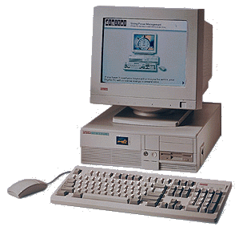

Daffy started life as a Digital Venturis 575e (pictured) donated to the society by Progress Computer Systems Ltd.
A Pentium 75 with 24 MB RAM and a bit over 1.1 GB of disk, Daffy was for a long time our general purpose computing and web server for our members. Unfortunately, a variety of problems (probably caused by overheating) led to Fishy replacing it as our gateway machine.
The problems continued when Daffy's not-entirely standard PSU failed in the summer of '99. Our inability to find a suitable replacement PSU meant the entire box was replaced with a 486/66 kindly donated by Alistair, our friendly Trinity Computing Officer. Stephen White salvaged all we could from the old Daffy to ensure the new box has 24 MB of RAM and 1.5 GB of HD.
It is currently asleep, waiting to spring into action at the first sign of problems.